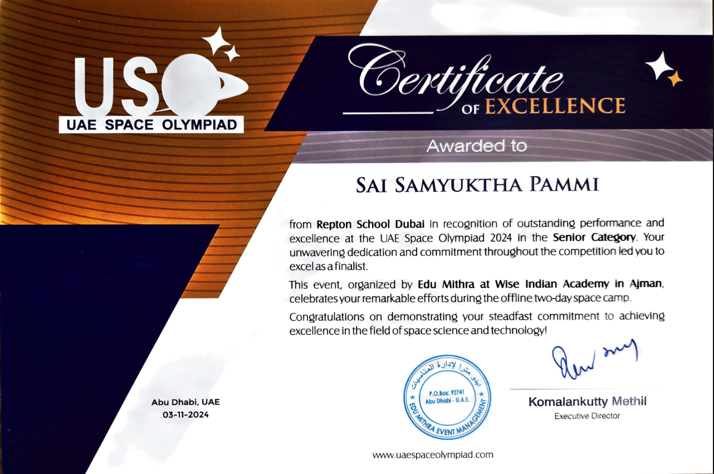
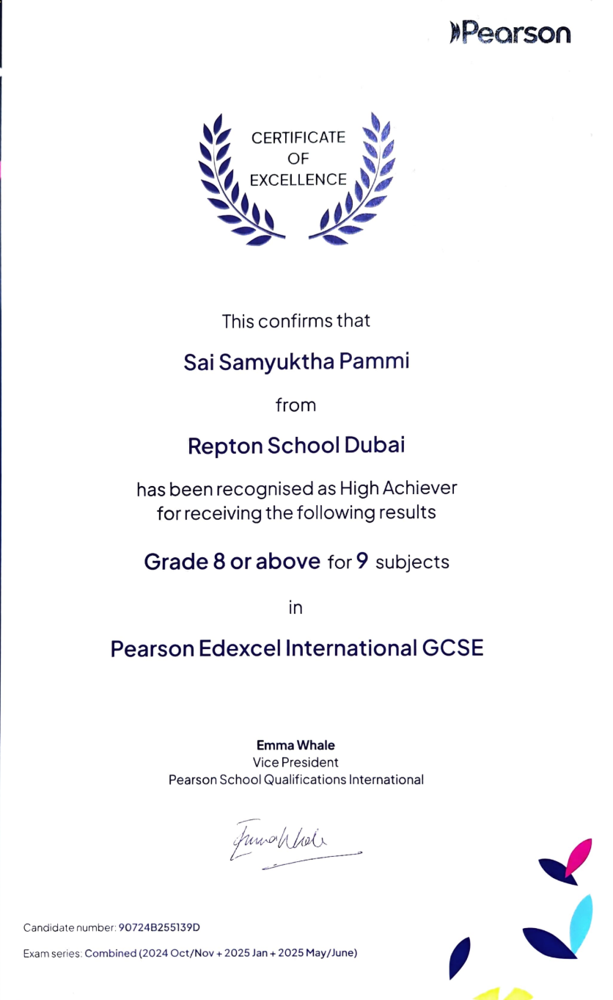

F1 in Schools
National Fastest Car
Engineering · AI · Research · Leadership
Sai Samyuktha Pammi
Student engineer, researcher and problem solver exploring how mathematics, emerging technology and thoughtful design can turn ambitious ideas into practical outcomes.
Global STEAM
in AI
Published Independent
Research Paper
Rathbone Society
Academic Cohort
01
About
Curiosity across disciplines.
I am drawn to problems where engineering, mathematics and emerging technology intersect.
From designing and optimising a competition race car to researching electric-vehicle battery performance, I enjoy moving between theory, experimentation and practical implementation.
Alongside STEM, public speaking, music, languages, leadership and community involvement have shaped how I collaborate, communicate and approach unfamiliar challenges.
Mechanical Engineering
Artificial Intelligence
Energy Systems
Applied Mathematics
Design
Research
Featured Research
Questions worth investigating.
Independent research exploring how driving behaviour influences electric-vehicle battery performance.
EV Battery Research
01 / 02
Independent Research · 2026
Impact of Driving-Cycle Characteristics on Electric-Vehicle Battery Performance
A Bayesian-Optimization Framework
Independently authored research using MATLAB, Simulink and Bayesian optimisation to investigate how different driving cycles affect EV energy consumption, battery sizing and cell configurations.
Projects & Making
Choose a project. Explore the process.
Select a project to explore the problem, technical work, role, media, outcome and key learning.


F1 in Schools
01 / 09
Engineering · Design · Leadership
F1 in Schools
National 1st Place · Fastest Car
Overview
As Team Manager and Car Designer, I led technical development and competition strategy while designing and iteratively optimising the car.
Technical Work
Applied CAD, aerodynamic principles, testing and performance iteration to improve the competition car.
My Role
Team management, car design, engineering decisions and competition strategy.
Outcome
National 1st Place · Fastest Car.
Global STEAM in AI · IT Girls
01 / 02
Artificial Intelligence · Education
IT Girls
1st Place — Global STEAM in AI Multimodal Championship 2024–2025
Overview
IT Girls is an AI-powered personalized tutor designed to support students studying IGCSE subjects, with a focus on making high-quality educational support more accessible.
The Problem
Students do not always have immediate, personalized academic support, particularly outside school hours. We explored how AI could help bridge this gap without making quality education dependent on access to paid resources.
What We Built
A multilingual educational chatbot supporting 64 languages and personalized help across IGCSE subjects, while considering responsible AI, transparency and trustworthiness.
My Role — Team Captain
I led three teammates across project direction, delegation, deadlines, chatbot design and development, user research, presentations, and evaluation of ethical and educational implications.
User Research
We interviewed teachers, students and parents to validate the problem and shape the chatbot's features and educational purpose.
What I Learned
AI and chatbot development, project management, team leadership, problem-solving, user research, responsible AI, technical communication and iteration.
Outcome
Our team won 1st place internationally. The project showed me how technical skills, user research and responsible AI design can combine to address a real-world problem.
EV Battery Research
01 / 02
Independent Research · 2026
EV Battery Research
A Bayesian-Optimization Framework
Technical Work
Used MATLAB, Simulink and Bayesian optimisation to investigate how driving cycles affect EV energy consumption, battery sizing and cell configurations.
Outcome
Published independent research.
Read Publication ↗
Eco Champs
01 / 01
Sustainability · Entrepreneurship
Eco Champs
Lumi Global Entrepreneurship Challenge
Overview
Collaborated with students across Dubai and Riyadh to develop a digital prototype addressing water pollution and plastic waste during an intensive design-thinking and entrepreneurship programme.
Engineering Exposure
Learning beyond the classroom.
Compact visual stories from internships, summer programmes and hands-on engineering environments.
Siemens Energy
01 / 03
Engineering Internship · Abu Dhabi
Siemens Energy
Gained exposure to turbomachinery, compressors, turbines, non-destructive testing, laser scanning, machining and balancing while observing industrial engineering practice, precision manufacturing and safety culture.
Engineering Internship
01 / 02
Electrical Engineering Internship
Emirates Transformers
Observed transformer core assembly, coil winding, insulation, tanking and electrical testing, gaining insight into industrial electrical engineering, manufacturing and quality standards.
Cambridge AI Summer Programme
01 / 02
Artificial Intelligence Summer Programme
Cambridge · Immerse Education
Based at Sidney Sussex College, the programme gave me my first real glimpse into university life. Learning from Cambridge undergraduate and PhD student mentors gave me valuable insight into the University’s teaching style, academic culture, and student experience. I also had the opportunity to visit almost all of the Cambridge colleges.
Throughout the course, I explored concepts including gradient descent, neural network weights, Q-functions, and reinforcement learning. For my final project, I developed an AI-powered ping pong game that learned from its opponent, adapted its strategy, and dynamically adjusted its difficulty.
KidSpace Robotics
01 / 01
STEM Volunteer Work Experience
KidSpace Robotics
Supported STEM and robotics activities for younger students while developing communication, teamwork, mentoring and the ability to make technical ideas accessible.
Leadership & Impact
Building spaces for others to participate.
Leadership expressed through organising, communication, debate, public speaking and community engagement.
Founder & Chief Organiser
Festival of Lights
Initiated and led a large-scale school event from conception through programme development, communication and logistics.
Co-Founder
Voices in Motion
Co-created a weekly rapid debate platform built around evidence-based argument, intellectual confidence and student voice.
Selected Student Speaker
AI & Education
Represented Repton Dubai in discussions and speaking opportunities focused on responsible and meaningful integration of AI into education.
Student Leadership Team
Public Relations Ambassador
Supported outreach, communication and participation while representing students and strengthening wider school engagement.
Academic & Competitive Highlights
Evidence of consistent excellence.
A selected set of academically significant external, national and school-level recognitions.

National STEM Recognition
UAE Space Olympiad
National Finalist
Reached the national finalist stage, demonstrating scientific reasoning, problem-solving and strong interest in space science and STEM.
View Certificate ↗
CSMC
International Mathematics Distinction
Canadian Senior Mathematics Contest
Certificate of Distinction · 2025
Recognised for strong mathematical reasoning and creative problem-solving in challenging, non-routine problems.
UKMT
Olympiad-Level Mathematics
UKMT Maclaurin Mathematical Olympiad
Selected Participant · Year 11
Selected for the Maclaurin Olympiad, recognising advanced mathematical ability and strength in non-routine problem solving.
GOLD
Sustained Mathematics Achievement
UKMT Mathematics Challenges
Sustained Gold Achievement
Consistently achieved Gold Awards from Junior through Intermediate and Senior levels, including the highest Senior result in school.

Academic Examination Recognition
Pearson High Achievers Award
Outstanding Academic Performance
Recognised for outstanding academic performance in Pearson Edexcel examinations.
View Certificate ↗
TOP 5%
Academic Standing
Rathbone Society
Top 5% Academic Cohort
Selected for Repton School Dubai's academic society recognising the top 5% of students.
#1
Independent Research & Communication
Rathbone Conference
1st Place · Year 9
Won first place for the independent research project “Is Solidity an Illusion?”, exploring concepts from quantum physics.
MATH
School Representation
Dubai Maths Super League
Repton School Representative
Selected from a cohort of approximately 200 students to represent the school in an inter-school mathematics competition.
Beyond STEM
Discipline in different forms.
Music, language, performance and sport provide another lens through which I learn, collaborate and create.
Piano
Trinity College London · Grade 8
Violin
Trinity College London · Grade 6
French
DELF B1 certification
Sailing
Stage 2 certification
Contact
Let's continue the conversation.
Explore my work and academic journey, or connect with me professionally.